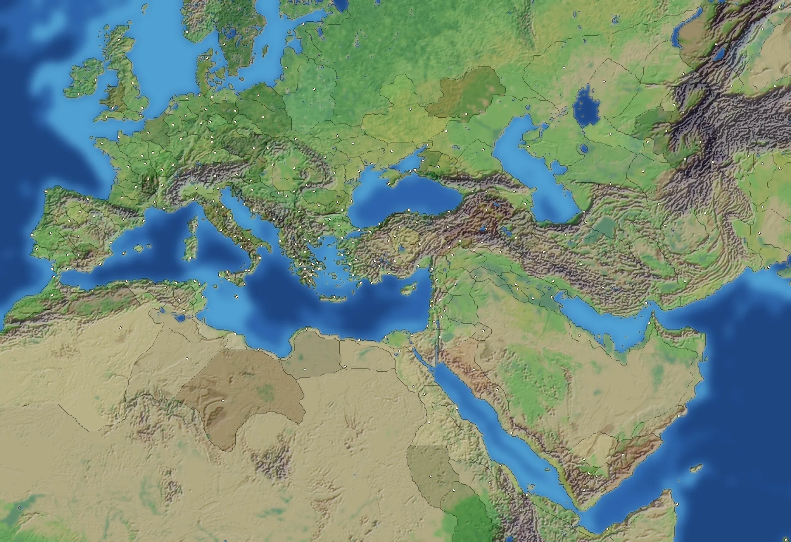
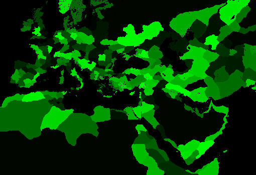

The world map
← wiki index · regions and settlements
The campaign map at the start of the RIS Classic campaign.


← wiki index · regions and settlements
The campaign map at the start of the RIS Classic campaign.

